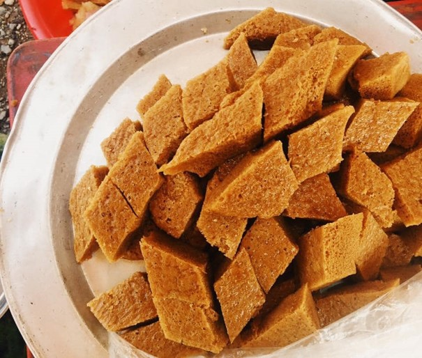

Bánh bò
Bánh bò là món bánh truyền thống đã có từ xa xưa. Ở mỗi vùng miền khác nhau, món bánh này lại có những điểm khác biệt về nguyên liệu, cách chế biến và cả màu sắc, hương vị. Đã từ rất lâu, trong những phiên chợ quê của người dân Cao Bằng, không khó để ta tìm ra một hàng bánh bò vừa được hấp nóng hổi, phủ kín bằng vải, tỏa ra một hương thơm đầy sức quyến rũ và hấp dẫn.
Bánh bò truyền thống của người Cao Bằng (còn có tên gọi dân dã là “Cao Bông” theo tiếng dân tộc của người Tày, Nùng nơi đây) là loại bánh có màu trắng như bánh bao, được làm từ bột gạo cho lên men cùng với đường kính.
Gạo để làm bánh bò Cao Bằng là loại gạo Đoàn Kết, ngâm nước từ 6 đến 8 tiếng rồi xay nhuyễn thành bột. Gạo được xay nhuyễn trực tiếp bằng cối đá để bột dẻo và ngon. Đây vẫn là cách xay bột truyền thống của người dân miền Bắc trước kia.
Sau khi ủ bột cho lên men, bánh được hấp trong các khuôn hình tròn có kích thước lớn rồi cắt miếng nhỏ hình chữ nhật để ăn dần.
Bánh bò là món bánh thân thuộc với mọi người dân Cao Bằng nhưng cách làm bánh truyền thống đòi hỏi nhiều thời gian, công sức, sự tỉ mỉ, món bánh làm ra thường chỉ giữ được độ mềm dẻo trong thời gian ngắn và dễ bị mốc.
Sau này, người dân nơi đây sử dụng đường thốt nốt thay thế đường kính và cũng có sự thay đổi về nguyên liệu, cách thức chế biến để chiếc bánh có màu vàng mật, đẹp mắt và thơm hơn mà vẫn giữ được độ dẻo, mềm nhưng không gây ngán.
Cũng từ đó, món bánh bò của người Cao Bằng dần được biết đến nhiều hơn và trở thành một trong số những đặc sản ẩm thực của mảnh đất biên giới phía Đông Bắc này.